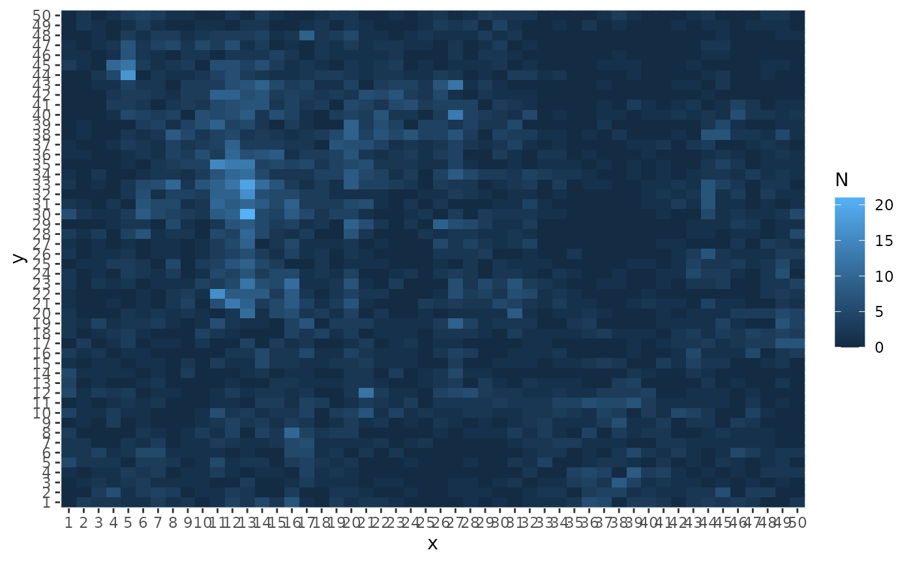

TMB-validation-tutorial.RmdExamples will reply on two models from the TMB example suite:
Examples can be run in R using:
TMB::runExample(name = "simple") and
TMB::runExample(name = "ar1xar1")
path <- here::here()
TMB::runExample(name = "randomwalkvalidation", exfolder = paste0(path,"/inst/examples"))
#Correct Model
osa <- TMB::oneStepPredict(obj1, observation.name = "y", method = "fullGaussian")
#Mis-specified Model
osa <- TMB::oneStepPredict(obj0, observation.name = "y", method = "fullGaussian")
osa <- TMB::oneStepPredict(obj1, observation.name = "y", data.term.indicator = "keep",
method = "oneStepGaussian")
#Plot data:
ggplot2::ggplot(d, ggplot2::aes(x,y,fill = N)) + ggplot2::geom_raster()
Data are discrete, so need to set discrete = TRUE